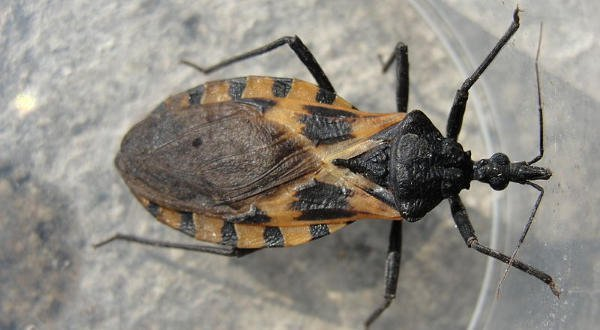
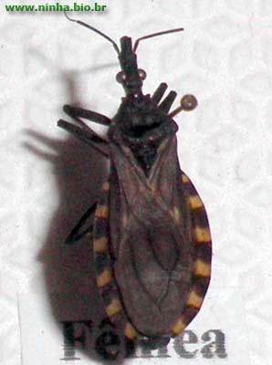

O Triatoma infestans é conhecido no Brasil como Barbeiro, este inseto é comum em alguns países
da América do Sul, costuma habitar em casas, principalmente habitações feitas de de madeira.
O maior perigo desse inseto é que ele é o transmissor da doença de chagas, assim como os
mosquitos o barbeiro é um inseto hematófago (que se alimenta de sangue), ele tem vida longa
e pode viver de um a dois anos, possui hábitos noturnos e costuma atacar as suas vítimas quando
estão dormindo. A Chagas é uma doença parasitária que afeta a sistema cardiovascular, a patologia
pode levar anos para se manifestar e se não tratada pode levar a morte.
Os barbeiros são insetos conhecidos das populações rurais de várias regiões do Brasil.
Existem mais de 100 espécies de barbeiros. Algumas vivem somente na mata, mas outras
se adaptaram totalmente às casas.Geralmente pretos ou acinzentados, possuem manchas vermelhas,
amarelas ou alaranjadas ao redor de seu abdômem.Os barbeiros são hematófagos (se alimentam de sangue).
Para se alimentarem, os barbeiros utilizam sua tromba (que funciona como uma agulha).
Esta é introduzida através da pele do animal de que ele vai se alimentar, e por ela suga o sangue.
Para que suas vítimas estejam quietinhas ele prefere atacar durante o sono.
Para não acordar a vítima, a picada do barbeiro não é dolorosa, mas acompanhada de pequena coceira.
O barbeiro possui, em sua saliva, uma substância que anestesia o local onde introduz sua tromba.
Os barbeiros podem ser transmissores da Doença de Chagas.O micróbio da Doença de Chagas parece não
afetar os barbeiros contaminados.
Um barbeiro vive em média de um a dois anos.
A fêmea coloca 1 a 2 centenas de ovos, que demoram 4 semanas para abrirem e nascerem as larvas
(alguns dias depois ela já sairá à procura de sangue). Após sua primeira refeição a larva sofrerá
mudanças em seu corpo, com perda de sua pele também chamada casca. Este fenômeno chama-se muda e
serve para possibilitar que o inseto sofra algumas transformações e aumente o seu tamanho,
enquanto a nova casca ainda está mole e flexível. O barbeiro passa ao todo por cinco mudas,
até atingir o estágio adulto. Esse se diferencia dos anteriores pelo seu maior tamanho, pela
presença de asas completas e pelo aparelho sexual totalmente desenvolvido, portanto apto à procriação.
A fêmea adulta diferencia-se do macho pela presença de uma protuberância em sua extremidade traseira,
denominada ovopositor.Seus inimigos naturais são algumas formigas e abelhas, certos tipos de insetos
predadores, galinhas, outras aves e o próprio homem.Como se trata de um inseto que pode transmitir
uma doença grave (a doença de chagas), achei que seria melhor ir buscar informações e imagens no
centro nacional de referência - O Instituto Osvaldo Cruz - FIOCRUZ.
A maioria das fotos foram feitas na FIOCRUZ, com uma máquina comum, mas servem para identificar este
perigoso animalzinho.


O passeio para conhecer a FIOCRUZ, vale a pena, principalmente se for com crianças.
O museu da vida mostra muitas curiosidades, onde se pode interagir e aprender brincando
(eu que sou adulta adorei).Os funcionários são super prestativos e educados, e tem também
um bondinho pra quem não quer subir andando ao castelinho (que é lindo!!!!!) .